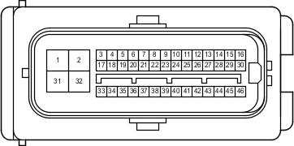

Наименование
Блок управления рабочими цилиндрами тормозов в сборе
Код
A7
Каталожный номер
90980-12297
Цвет
Черный
Технические характеристики
Жгуты проводов для ремонта

Расположение
Расположение деталей в моторном отсеке (для моделей с левосторонним рулевым управлением и двигателем 1GR-FE) 1
Расположение деталей в моторном отсеке (для моделей с левосторонним рулевым управлением и двигателем 1KD-FTV) 1
Расположение деталей в моторном отсеке (для моделей с правосторонним рулевым управлением и двигателем 1GR-FE) 1
Расположение деталей в моторном отсеке (для моделей с правосторонним рулевым управлением и двигателем 1KD-FTV) 1
Система
Система полного привода
A-TRC (для моделей с 1GR-FE, 1KD-FTV)
АБС (для моделей с 1GR-FE, 1KD-FTV)
Система адаптивного переднего освещения
Аудиосистема (9-канальная, для моделей без системы навигации)
Аудиосистема (для моделей с системой навигации)
Щиток приборов (для моделей с левосторонним рулевым управлением)
Щиток приборов (для моделей с правосторонним рулевым управлением)
Система Crawl (для моделей с 1GR-FE, 1KD-FTV)
Система круиз-контроля (для моделей с 1GR-FE)
Система круиз-контроля (для моделей с 1KD-FTV)
DLC3
Система управления замками дверей
Система помощи при спуске по склону (для моделей с 1GR-FE, 1KD-FTV)
Динамическая радарная система круиз-контроля (для моделей с 1GR-FE)
Динамическая радарная система круиз-контроля (для моделей с 1KD-FTV)
Индикатор ECT и A/T (для моделей с 1GR-FE)
Индикатор ECT и A/T (для моделей с 1KD-FTV)
Электронная система управления пневматической подвеской (для моделей с левосторонним рулевым управлением)
Электронная система управления пневматической подвеской (для моделей с правосторонним рулевым управлением)
Система управления двигателем (для моделей с 1GR-FE)
Система управления двигателем (для моделей с 1KD-FTV)
Иммобилайзер двигателя (для моделей с системой посадки и запуска)
Система посадки и запуска
Передние стеклоочиститель и стеклоомыватель (для моделей с левосторонним рулевым управлением и автоматическими стеклоочистителями)
Передние стеклоочиститель и стеклоомыватель (для моделей с правосторонним рулевым управлением и автоматическими стеклоочистителями)
Механизм открывания защелки стекла
Система помощи при подъеме по склону (для моделей с 1GR-FE, 1KD-FTV)
Кинетическая динамическая система подвески
Многофункциональный дисплей
Монитор "Multi-Terrain" (для моделей с системой навигации)
Монитор "Multi-Terrain" (для моделей без системы навигации)
Переключатель выбора "Multi-Terrain" (для моделей с 1GR-FE, 1KD-FTV)
Мультиплексная система передачи данных (CAN, для моделей с левосторонним рулевым управлением)
Мультиплексная система передачи данных (CAN, для моделей с правосторонним рулевым управлением)
Система навигации
Система помощи при парковке (монитор помощи при парковке / монитор заднего вида и монитор переднего и бокового вида с широкими углами обзора) (для моделей с системой навигации)
Система помощи при парковке (монитор заднего вида и монитор переднего и бокового вида с широкими углами обзора) (для моделей без системы навигации)
Система помощи при парковке (сенсорная система помощи при парковке TOYOTA) (с 4 датчиками)
Система помощи при парковке (сенсорная система помощи при парковке TOYOTA) (с 8 датчиками, для моделей с системой навигации)
Система помощи при парковке (сенсорная система помощи при парковке TOYOTA) (с 8 датчиками, для моделей без системы навигации и с многофункциональным дисплеем)
Система помощи при парковке (сенсорная система помощи при парковке TOYOTA) (с 8 датчиками, для моделей без системы навигации и многофункционального дисплея)
Рулевое управление с усилителем
Предаварийная система безопасности
Блокировка заднего дифференциала
Система предупреждения о непристегнутом ремне безопасности
Система запуска (для моделей с системой посадки и запуска)
Система блокировки рулевого управления (для моделей с системой посадки и запуска)
Стоп-сигналы
VSC (для моделей с 1GR-FE, 1KD-FTV)
Система дистанционной блокировки дверей (для моделей с системой посадки и запуска)